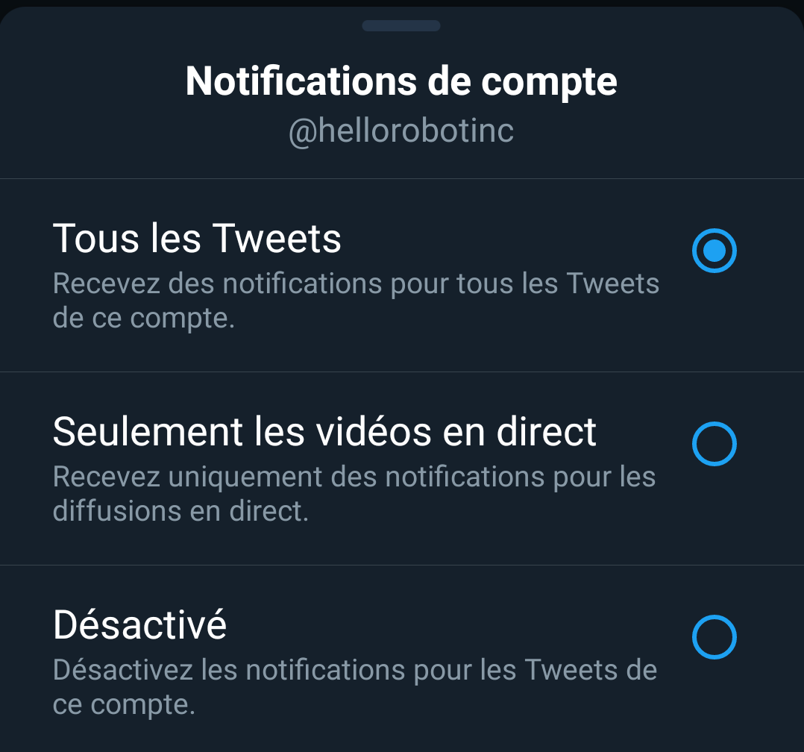

Durant ma seconde année de BTS SIO, il m'a été demandé de faire une veille à propos d'une technologie récente ou en cours de développement.
Mon choix s'est porté sur un robot du nom de STRETCH. Au départ, ce robot me semblait peu intéressant, mais finalement, j'ai remarqué un potentiel énorme émanant de ce projet.
La veille entraîne des actions de recherche, de traitement et de diffusion de l'information collectée en vue de son exploitation éventuelle par des personnes pour lesquelles elle s'avère utile.
La veille est une écoute de l'environnement, un état d'esprit dont doit s'imprégner le collaborateur (compétence comportementale).
À partir d'un thème précis, la méthodologie de la veille doit permettre de repérer la fiabilité des sources d'information, les conditions de la traçabilité des documents et des mises à jour ainsi que les modalités de structuration des données.
Les flux RSS
Un flux RSS est un format de fichier particulier dont le contenu est produit automatiquement en fonction des mises à jour d'un site web. Ce contenu est laissé au libre choix du producteur du flux, mais très généralement se compose des titres des mises à jour de pages ou d'articles, des liens hypertextes correspondants, et de descriptions, en quelques lignes, de ces mises à jour.
Utiliser des flux RSS permet d'avoir des informations automatiquement sans chercher.
J'utilise personnellement Google Alerts qui permet de recevoir des mails automatiquement lorsqu'un contenu susceptible de m'intéresser est publié.
Problème rencontré lors de la demande de flux RSS : STRETCH est un mot bien trop utilisé dans d'autres milieux.
Aucun de ces mails ci-dessus ne concerne mon sujet de veille.
Les réseaux sociaux
Les réseaux sociaux restent une source d'informations même si ce n'est pas toujours sûr, mais il est bien plus difficile de trouver des informations pertinentes.
Le réseau social que j'ai utilisé est Twitter. Une option nous permet de recevoir des notifications lorsqu'un compte auquel je suis abonné fait un Tweet.
Après la récupération de différents Tweet de Hello Robot, on remarque que ceux-ci sont, pour la plupart, orientés vers le milieu médical.
J'ai aussi utilisé Feedly, un outil permettant de regrouper différents flux, recherches ou mises à jours de sites. C'est un outil très efficace et complet, le seul problème est la limite si on a pas la version payante.
Chercher sur le web
C'est la source d'informations qui prend le plus de temps, mais on peut tomber sur des blogs, des articles, ou encore des forums de qualité et l'ajouter dans ses sources.
Comme dit précédemment, mon choix s'est porté sur STRETCH, c'est un robot qui semble très simple et basique mais il ouvre des portes immmenses pour l'éducation.
C'est un robot avec un code open-source que n'importe qui ayant quelques connaissances en programmation peut utiliser.

Il est fournit avec différents codes exécutables afin de tester quelques fonctionnalités.
Le robot STRETCH se dirige de plus en plus vers le milieu de la santé, comme le confirment les tweets récents de Hello Robot :
Le projet partait, de base, sans réel but.
On remarque la direction principale choisie par la communauté elle même.
Cette technologie sera peut être la future évolution concernant le domaine de la chirurgie.
Evidemment, il reste toujours des personnes codant STRETCH différement mais ceux-ci ne sont pas mis en avant par Hello Robot.
Le GitHub de Hello Robot :
A venir...
Sahan69100@gmail.com
Mobile : 06 82 01 09 08